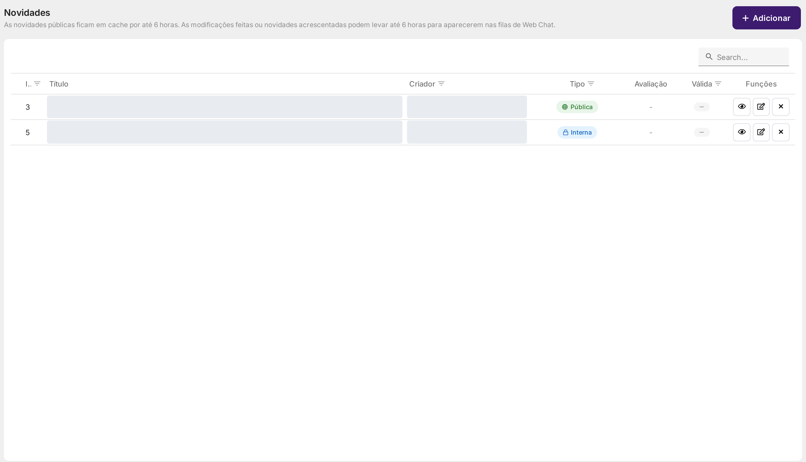
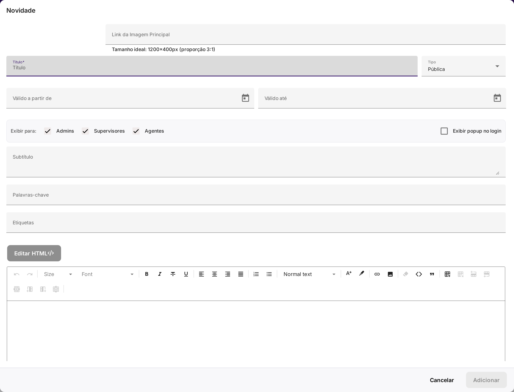

Mural de Novidades (comunicados)
O mural onde a instância publica avisos para a própria equipe — mudança de procedimento, manutenção programada, novo horário — e, quando o comunicado é público, também para quem conversa pelo Web Chat. Este capítulo mostra como cada aviso é montado, por quanto tempo fica no ar, quem o recebe e como o leitor o encontra dentro do sistema.
1. Para que serve
O mural de novidades é um caderno de recados com prazo de validade. Em vez de mandar a mesma orientação por chat interno para trinta pessoas, você publica uma vez, escolhe os perfis que devem ver e define até quando o aviso continua aparecendo. Quem ainda não leu vê um contador no ícone de jornal da barra superior; quem abre o comunicado passa a vê-lo como lido.
Cada novidade tem um dos dois tipos abaixo, e a diferença é de alcance, não de formato:
| Tipo | Quem vê | Uso típico |
|---|---|---|
| Pública | A equipe marcada em Exibir para e as filas de Web Chat. A tela avisa que o conteúdo público fica em cache por até 6 horas, então uma publicação nova pode demorar esse tempo para aparecer nos atendimentos do Web Chat. | Aviso de recesso, mudança de horário de atendimento, comunicado sobre instabilidade — informação que o visitante do site também pode ler. |
| Interna | Somente a equipe marcada em Exibir para. Não é distribuída para as filas de Web Chat. | Procedimento interno, meta do mês, reforço de script de atendimento, senha de campanha. |
2. Quando usar
O mural funciona bem para o que vale mais de uma leitura e perde valor rápido. Os cenários abaixo são os que mais aparecem na operação:
| Cenário | O que o operador faz | O que o sistema faz |
|---|---|---|
| Manutenção programada do ERP | Publica uma novidade interna com data de início e fim iguais à janela da manutenção. | O aviso aparece para os perfis escolhidos durante a janela e sai sozinho depois, sem precisar apagar nada. |
| Novo procedimento de cancelamento | Publica uma novidade interna com o passo a passo no corpo, sem data final. | Fica no mural até ser substituída ou apagada; o popup no login garante que ninguém entre no turno sem ver. |
| Aviso de feriado para o visitante | Publica uma novidade pública, com o texto que o cliente deve ler, e marca Exibir para todos os perfis. | Além de aparecer para a equipe, o conteúdo entra na distribuição das filas de Web Chat dentro da janela de cache de 6 horas. |
| Reforço de qualidade para um turno | Publica uma novidade interna visível só para agentes, com validade de um dia. | Supervisores e administradores não recebem o aviso; ele desaparece no fim do dia. |
3. A tela
O cadastro fica em Configurações › Novidades (rota /base/config/newslist). A tela abre com o aviso do cache de 6 horas, o botão Adicionar e a grade dos comunicados já cadastrados.

| Coluna | O que mostra |
|---|---|
| ID | Número do comunicado, usado nas chamadas de API. |
| Título | O título curto que aparece na lista do leitor e no topo do comunicado aberto. |
| Criador | Quem publicou, com a foto de perfil. Quando o comunicado vem de fora da instância, o autor não é exibido ao leitor. |
| Tipo | Pública ou Interna. |
| Avaliação | A nota registrada no comunicado (campos rating e votes no registro). Aparece como - enquanto ninguém avaliou. |
| Válida | Situação da janela de validade: comunicados com a janela vencida aparecem fora do ar, mesmo continuando na grade. |
| Funções | Três ações por linha: Pré-visualizar, Editar texto e Excluir texto. |
4. Montar um comunicado
O botão Adicionar abre o formulário Novidade. A ordem dos campos segue a leitura que o leitor fará depois: imagem, título, tipo, janela de validade, público, popup, subtítulo, palavras-chave, etiquetas e corpo.

| Campo | Para que serve | Campo no registro |
|---|---|---|
| Link da Imagem Principal | Capa do comunicado. Medida ideal 1200×400 px (3:1). Sem imagem, o comunicado abre só com texto. | mainimage |
| Título | Chamada curta. Na lista do leitor ele é truncado com reticências quando passa da largura da coluna, então vale manter em poucas palavras. | title |
| Tipo | Pública (equipe e filas de Web Chat) ou Interna (só equipe). | type — 0 pública, 1 interna |
| Válido a partir | Data a partir da qual o comunicado pode ser exibido. É a mesma data que o comunicado aberto exibe como Publicado em. | validafter |
| Válido até | Data até a qual ele deve ser exibido. É o fim da janela de validade do comunicado. | validuntil |
| Exibir para | Três caixas independentes: Admins, Supervisores, Agentes. Marcar mais de uma vale para todos os perfis marcados. | showadmins, showsupervisors, showagents |
| Exibir popup no login | Abre o comunicado automaticamente na entrada do usuário, desde que ele ainda não o tenha lido. | popuponlogin |
| Subtítulo | Linha de apoio exibida abaixo do título, na lista e no comunicado. | description |
| Palavras-chave | Termos livres para busca e classificação do comunicado. | keywords |
| Etiquetas | Etiquetas já cadastradas na instância, exibidas como chips coloridos no comunicado. | tags |
| Editar HTML | Abre o editor do corpo do comunicado, com formatação de texto, tamanho, fonte e títulos. | content |
Passo a passo
- Abra Configurações › Novidades e clique em Adicionar.
- Cole o link da imagem de capa (1200×400 px) ou deixe em branco.
- Escreva o Título e escolha o Tipo.
- Preencha Válido a partir e Válido até conforme o prazo do aviso: é essa janela que decide quando ele entra e quando sai do mural.
- Marque em Exibir para os perfis que precisam ler. Marque Exibir popup no login apenas quando for obrigatório ler antes de começar o turno.
- Preencha o Subtítulo, as Palavras-chave e as Etiquetas que ajudem a reencontrar o comunicado depois.
- Clique em Editar HTML e escreva o corpo do aviso.
- Use Pré-visualizar, na grade, para conferir como o comunicado será lido antes de divulgar.
5. Como o leitor recebe
Do lado de quem lê, o caminho é sempre o mesmo, independentemente do perfil:
- Na entrada, o sistema carrega os comunicados destinados àquele usuário e conta quantos ainda não foram lidos.
- O ícone de jornal da barra superior ganha um contador com esse número. Sem comunicado pendente, o contador fica neutro, em zero.
- Se algum comunicado não lido estiver marcado para Exibir popup no login, o mais recente deles abre sozinho. Sem essa marcação, o aviso espera o usuário clicar no ícone.
- Dentro do mural, os não lidos aparecem primeiro; entre os não lidos, vale a data mais recente.
- Ao abrir um comunicado, o conteúdo é carregado e ele é marcado como lido — o contador cai na mesma hora.
O comunicado aberto mostra, nesta ordem: imagem de capa (quando houver), título, autor, data (Publicado em), subtítulo, etiquetas e o corpo. Autor e etiquetas são omitidos quando o comunicado vem de fora da instância; nesse caso ele aparece apenas com o conteúdo e a data.
6. Acesso por API
O mural é servido pela API REST da própria instância, com o mesmo token JWT do login. As chamadas abaixo são as que a interface usa para exibir o mural ao usuário:
| Chamada | O que devolve |
|---|---|
GET /news/getMyNews | Lista dos comunicados destinados ao usuário autenticado, com a marca de já lido. |
POST /news/getContent {"id": 12} | Corpo em HTML do comunicado indicado. |
POST /news/markAsSeen {"id": 12} | Marca o comunicado como lido para aquele usuário. |
GET /news/getAllNews | Todos os comunicados da instância, com o registro completo — é a visão que alimenta a grade de cadastro. |
O registro completo de um comunicado tem os campos abaixo. Vale conhecer os que não aparecem no formulário porque eles explicam o comportamento de leitura:
| Campo | Conteúdo |
|---|---|
id, uuid | Identificador numérico e identificador estável do comunicado. |
title, description, content | Título, subtítulo e corpo em HTML. mjml aparece quando o corpo foi montado como e-mail. |
type | 0 para pública, 1 para interna. |
validafter, validuntil, valid | Janela de exibição e o indicador de vigência calculado a partir dela. |
showadmins, showsupervisors, showagents | Público-alvo por perfil. |
popuponlogin | 1 quando o comunicado abre sozinho no login. |
seenby | Lista dos identificadores de usuário que já leram. |
rating, votes | Nota e quantidade de avaliações registradas. |
queues, tags, keywords | Filas associadas, etiquetas e palavras-chave. |
writtenby, writtenbyname | Autor do comunicado. |
fromremote | 1 quando o comunicado não foi escrito na instância. Nesse caso o leitor não vê autor nem etiquetas. |
version, createdAt, updatedAt | Controle de alteração do registro. |
7. Exemplo completo
Cenário: a instância vai ficar sem o ERP no sábado, das 8h ao meio-dia, e o atendimento passa a registrar pedidos no formulário de contingência. O aviso precisa aparecer para agentes e supervisores na sexta e sair do ar no sábado à tarde.
- Monte o registro. Tipo interna, título curto, janela de validade na sexta de manhã até sábado ao meio-dia, público restrito a supervisores e agentes, popup ligado — o turno começa sem o ERP e ninguém pode entrar sem saber.
- Escreva o corpo no editor HTML. Um parágrafo com a janela de indisponibilidade e um passo a passo numerado do formulário de contingência.
- Pré-visualize. Confira se a imagem de capa carrega e se o texto cabe nas primeiras linhas, que é o que o leitor vê antes de rolar.
- Publique e confira pelo lado do leitor. Entre com um usuário agente da instância: o contador do ícone de jornal deve subir, o popup deve abrir e, depois de fechar, o contador deve voltar a zero.
- Confira a saída automática. Depois da janela, o comunicado continua na grade de cadastro, mas deixa de ser entregue — é assim que se evita apagar histórico.
O registro equivalente, como a API o devolve:
{
"id": 18,
"uuid": "3f0c9d21-5b7e-4a1c-9e42-0b8d6a4412aa",
"title": "ERP indisponível no sábado",
"description": "Das 8h ao meio-dia, pedidos pelo formulário de contingência.",
"content": "<p>O ERP fica fora do ar no sábado, das 8h ao meio-dia.</p>\n<ol>\n <li>Abra o formulário de contingência no menu Pedidos.</li>\n <li>Preencha cliente, itens e forma de pagamento.</li>\n <li>Marque <strong>pedido manual</strong> e envie.</li>\n</ol>\n<p>A importação para o ERP acontece na segunda, automaticamente.</p>",
"type": 1,
"validafter": "2026-11-27T11:00:00.000Z",
"validuntil": "2026-11-28T15:00:00.000Z",
"valid": 1,
"showsupervisors": 1,
"showadmins": 0,
"showagents": 1,
"popuponlogin": 1,
"keywords": ["erp", "contingência", "sábado"],
"tags": [4],
"queues": [],
"rating": 0,
"votes": 0,
"seenby": "",
"writtenby": 513,
"writtenbyname": "Coordenação",
"fromremote": 0,
"version": 1
}Depois de publicado, cada usuário do público-alvo resolve a leitura em três chamadas: GET /news/getMyNews devolve o item com seenby vazio, POST /news/getContent com {"id": 18} devolve o HTML exibido e POST /news/markAsSeen com o mesmo id encerra a pendência daquele usuário.
8. Armadilhas
| Sintoma | Causa provável | O que fazer |
|---|---|---|
| Publiquei e ninguém viu. | Janela de validade vencida, público-alvo sem o perfil certo, ou o comunicado é público e ainda está dentro das 6 horas de cache do Web Chat. | Confira a coluna Válida, revise as três caixas de Exibir para e, para o Web Chat, aguarde a janela de cache. |
| O popup abriu para um agente e para outro não. | O popup só dispara para comunicado não lido. Quem já leu não recebe de novo, e quem não está no público-alvo nunca recebe. | Verifique seenby no registro e as caixas de perfil. |
| O título aparece cortado na lista do leitor. | A lista do mural trunca títulos longos com reticências. | Encurte o título e leve o detalhe para o subtítulo ou para o corpo. |
| Apaguei o comunicado e o aviso continua no Web Chat. | O conteúdo público já distribuído segue a janela de cache de 6 horas informada na própria tela. | Considere o prazo ao publicar algo que possa precisar de correção urgente; para correções, publique um aviso novo. |
| O comunicado aparece sem autor e sem etiquetas. | É um comunicado vindo de fora da instância (fromremote). |
Comportamento esperado: só título, data, subtítulo e corpo são exibidos. |
9. Checklist antes de divulgar
- O tipo está correto — o texto pode ser lido por cliente? Se sim, pública; se não, interna.
- A janela de validade cobre exatamente o período do aviso e não deixa um aviso vencido no ar.
- As três caixas de Exibir para estão coerentes com quem precisa agir.
- O popup está ligado só quando a leitura é obrigatória.
- Título curto, subtítulo informativo e imagem em 1200×400 px.
- O corpo foi conferido pelo Pré-visualizar, incluindo a primeira dobra.
Perguntas frequentes
Qual a diferença entre novidade pública e interna?
Pública é entregue para a equipe marcada e também entra nas filas de Web Chat, com o cache de 6 horas avisado na tela. Interna fica restrita à equipe. Nos dois casos a marcação de perfis em Exibir para continua valendo — uma novidade pública pode, por exemplo, ser exibida apenas para supervisores.
Como sei se o comunicado está no ar?
Pela coluna Válida, na grade, e pelo campo valid no registro devolvido pela API. Comunicados fora da janela continuam cadastrados, mas não são entregues.
Consigo apontar o comunicado para uma equipe ou fila específica?
Pelo formulário, o recorte é por perfil de usuário: administradores, supervisores e agentes. O registro também guarda as filas associadas ao comunicado, usadas na distribuição do conteúdo público.
O leitor pode avaliar o comunicado?
O registro tem nota e contagem de avaliações, exibidas na coluna Avaliação, que aparece como - enquanto não houver nenhuma. Um comunicado sem avaliação é o normal em murais internos.
Apagar o comunicado remove o histórico de leitura?
Sim. O registro e a lista de quem leu vão junto, porque a marcação de leitura pertence ao próprio comunicado. Se a intenção é só tirar o aviso do ar, prefira encerrar a validade em vez de apagar.
O que acontece se dois comunicados estiverem marcados para popup no login?
Só o mais recente abre automaticamente. Os outros ficam pendentes no mural, com o contador aceso, até serem abertos.